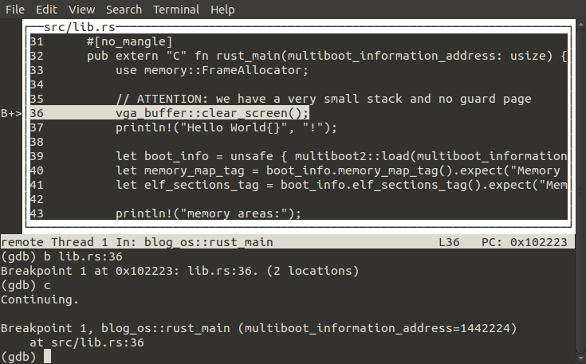

Set Up GDB
There are a lot of things that can go wrong when developing an OS. So it’s a good idea to add a debugger to our toolset, which allows us to set breakpoints and examine variables. We will use GDB as QEMU supports it out of the box.
🔗QEMU parameters
To make QEMU listen for a gdb connection, we add the -s flag to the run target in our Makefile:
run: $(iso)
@qemu-system-x86_64 -cdrom $(iso) -s
This allows us to connect a debugger at any time, for example to investigate why a panic occurred.
To wait for a debugger connection on startup, we add a debug target to the Makefile:
debug: $(iso)
@qemu-system-x86_64 -cdrom $(iso) -s -S
It is identical to the run target except for the additional -S flag. This flag causes QEMU to freeze on startup and wait until a debugger is connected. Now it should be possible to connect gdb.
🔗The annoying issue
Unfortunately gdb has an issue with the switch to long mode. If we connect when the CPU is already in long mode, everything works fine. But if we use make debug and thus connect right at the start, we get an error when we set a breakpoint in 64-bit mode:
Remote 'g' packet reply is too long: [a very long number]
This issue is known since 2012 but it is still not fixed. Maybe we find the reason in the issue thread:
from my (limited) experience, unless you ping the gdb-patches list weekly, this patch is more likely to remain forgotten :-)
Pretty frustrating, especially since the patch is very small.
🔗Building the patched GDB
So the only way to use gdb with make debug is to build a modified gdb version that includes the patch. I created a repository with the patched GDB to make this easy. Just follow the build instructions.
🔗Connecting GDB
Now you should have a rust-os-gdb subfolder. In its bin directory you find the gdb executable and the rust-gdb script, which improves rendering of Rust types. To make it easy to use it for our OS, we add a make gdb target to our Makefile:
gdb:
@rust-os-gdb/bin/rust-gdb "build/kernel-x86_64.bin" -ex "target remote :1234"
It loads the debug information from our kernel binary and connects to the localhost:1234 port, on which QEMU listens by default.
🔗Using GDB
After connecting to QEMU, you can use various gdb commands to control execution and examine data. All commands can be abbreviated as long they are still unique. For example, you can write c or cont instead of continue. The most important commands are:
helporh: Show the help.breakorb: Set a breakpoint. It possible to break on functions such asrust_mainor on source lines such aslib.rs:42. You can use tab for autocompletion and omit parts of the path as long it’s still unique. To modify breakpoints, you can usedisable,enable, anddeleteplus the breakpoint number.continueorc: Continue execution until a breakpoint is reached.nextorn: Step over the current line and break on the next line of the function. Sometimes this doesn’t work in Rust OSes.stepors: Step into the current line, i.e. jump to the called function. Sometimes this doesn’t work in Rust OSes.listorl: Shows the source code around the current position.printorp: Prints the value of a variable. You can use Cs*and&operators. To print in hexadecimal, usep/x.tui enable: Enables the text user interface, which provides a graphical interface (see below). To disable it again, runtui disable.

Of course there are many more commands. Feel free to send a PR if you think this list is missing something important. For a more complete GDB overview, check out Beej’s Quick Guide or the website for Harvard’s CS161 course.